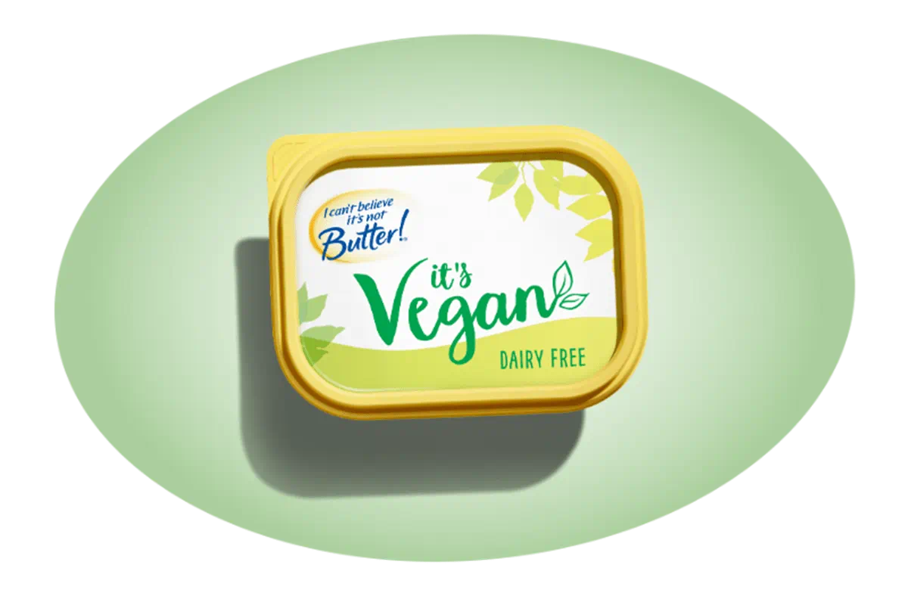
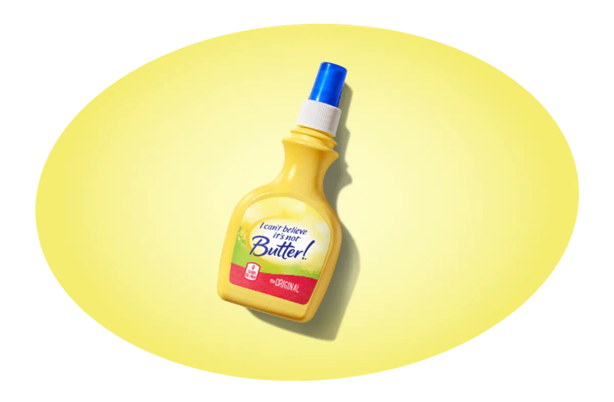
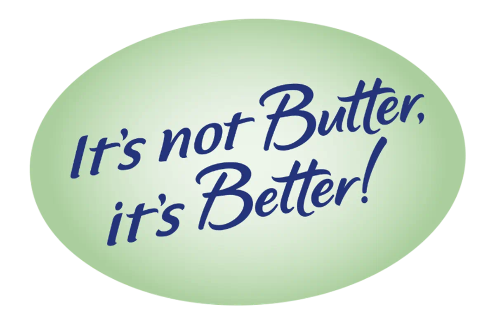

The history of margarine itself dates back to the 19th century when it was created as a cheaper alternative to butter. Initially made from animal fats, margarine evolved into a product primarily derived from vegetable oils. The name "margarine" comes from the Greek word "margarites," meaning pearl, due to its pearl-like luster.
The spread is made from a blend of vegetable oils, water, and other ingredients, often including salt, flavorings, and emulsifiers. It undergoes a process called hydrogenation, which converts the liquid vegetable oils into a solid form, giving it a butter-like consistency.
Since blowing minds(and not arteries) is what we do best, we've expanded our product line many times to include light versions with lower fat content, various flavors, and even a spray to enhance your favorite movie night.
